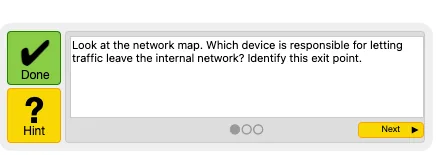

An intelligent tutor system project on teaching technical content of Networking and Subnetting
Overview
This initiative was developed in collaboration with a community college in Pennsylvania to address significant learning challenges faced by learners.
The current instructional strategies at the college have proven insufficient for fostering adequate comprehension and skill acquisition, which in turn poses increased difficulties for students as they progress to more advanced courses.
Goal
This project aims to enhance the effectiveness of learning by integrating adaptive learning tools for learners' pain points, ensuring students are better prepared for subsequent educational demands.
Role
Lead learning experience designer
Project manager
Tools
Cognitive Tutor Authoring Tools (CTAT)
Team
2 learning experience designers, 1 subject matter expert
Timeline
Oct 2024 - Feb 2025
- 1Interviews
- 2E-Learning Design
- 3Collaboration
- 4Tutor Demo
Interviews
During the ideation phase of the project, I conducted learner interviews to understand the pain points in learners' learning. I prepared think-aloud study with target learners, asking them to perform essential tasks on identifying networking classes and subnetting. By mapping out learners' thought processes and comparing them with SME's cognitive model, we were able to identify the knowledge gap and learning objectives for our project.
Here are our findings:
- Our learners are non-traditional students. They have various backgrounds, and many of them have been out of school for years. Long text for them to read can be challenging.
- Learners have difficulty identifying the network to the right classes.
- Learners are not familiar with the use of the Cisco method.
- Learners do not fully understand the definition of the default gateway, thus finding it difficult to identify it through a network diagram.
Based on the findings, we decided to create an interactive e-learning project with concise and effective feedback on the pain points. In this way, learners can proceed the course in their own pace, with necessary support and guidance to understand the content.

E-Learning Design
We leveraged multiple e-learning design principles for our interactive project.
One emphasis is immediate feedback. Immediate feedback has proven to be helpful to correct learners' misunderstandings quickly and strengthen the correct understanding.
What's unique about our feedback is we employ three layers of hints for our learners. Learners can always request a hint when they are unsure about the answer.
- The hints start with the most general hint, encouraging learners to think actively to solve the problem.
- The second layer of hints becomes more specific to guide learners in the right direction.
- The third layer of hint will provide the answer with explanation.
Collaboration
I have led the communication and collaboration with stakeholders throughout this project.
- We have been regularly meeting with the two clients at the community college, seeking their feedback and approval for the development of the project.
- I also organized weekly meetings with the instructional design team and the subject matter expert, ensuring the accuracy and relevancy of the technical content on networking.
- To ensure the usability of the project, I reached out to the target learner group for user testing recruitment, helping the team find testers at different phases of the project.
Tutor Demo
To better help learners understand the key features of the tutor, I also created this video demoing how learners can work with the tutor effectively.
Learnings
In this project, I have gained experience in the following aspects
- curating content for a diverse learner group, understanding their needs and differences than my previous learner group
- managing the communication with different stakeholders across organizations
- leading the whole cycle of delivering content, from ideation to deployment, data collection, and evaluation
Next steps
We are now in the stage of analyzing our data. We will use our analysis to evaluate the content effectiveness, identifying areas for improvement for our next iteration.